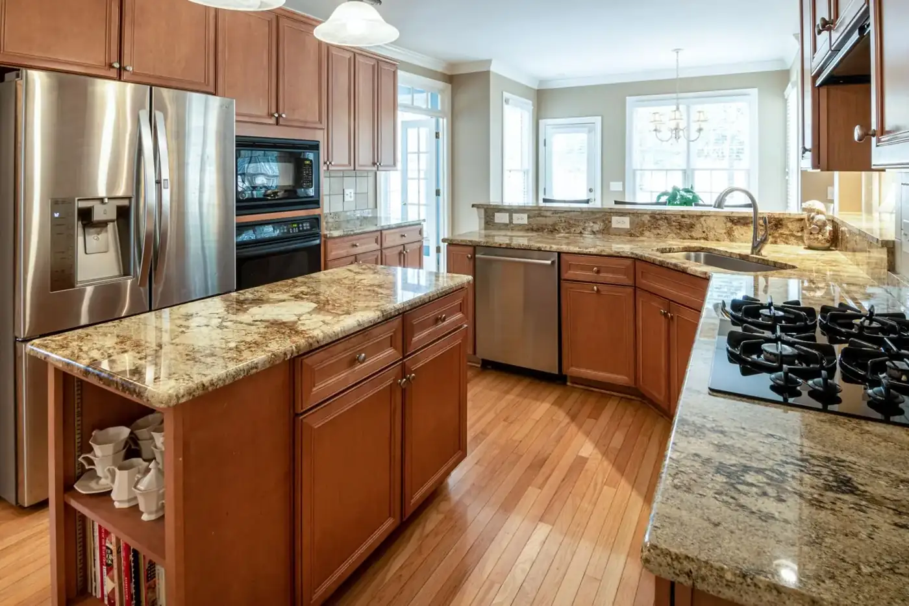
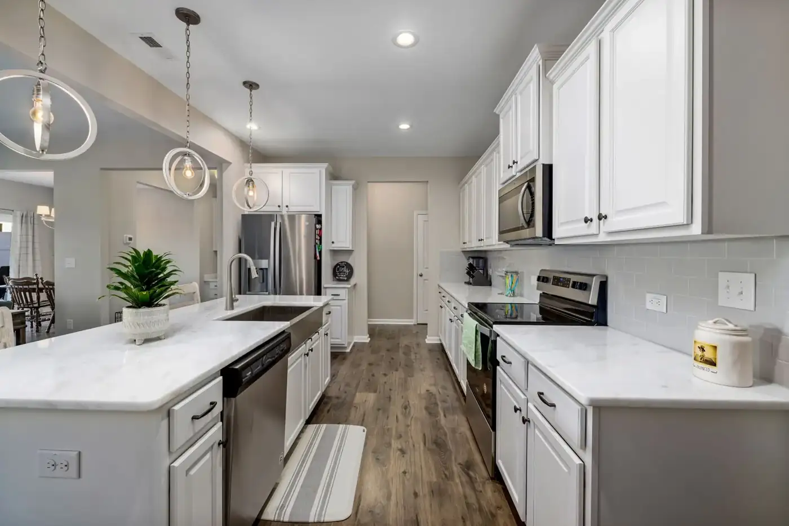
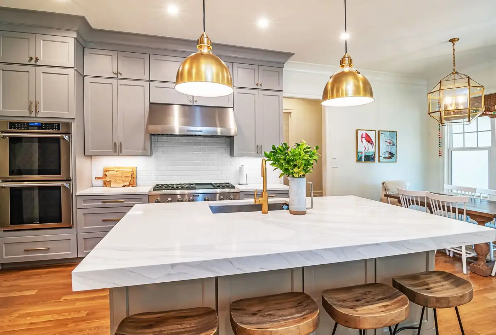

Solid surface benchtops
Seamless benchtops for kitchens and bathrooms.
Solid Surface Benchtops & More · Adelaide, SA
Solid surface benchtops, Custom surfaces, Benchtop replacement — Adelaide, SA.
What we do
Seamless benchtops for kitchens and bathrooms.
Unique custom designs for residential and commercial spaces.
Replacing worn benchtops with minimal downtime.
Corian, Hi-Macs, Meganite and Staron.
About
An Adelaide-based, family-owned business specialising in solid surface benchtops and custom surface solutions for residential and commercial spaces, with over 35 years of industry experience, skilled craftsmanship and careful attention to detail.
Gallery
Sample imagery from Pexels standing in for Solid Surface Benchtops & More projects — to be replaced with real project photos.






Reviews
Service area
Enquire
Tell us about your project and we’ll get back to you.
What this preview improves